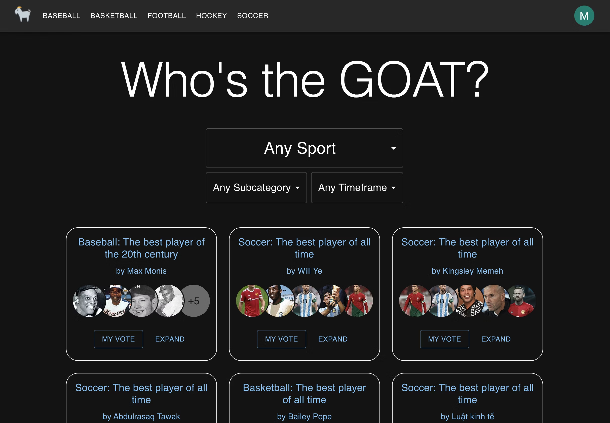

My name is Max
My world is code
Portfolio
I build websites in my spare time for fun and to try out new tools and techniques. Most of the repos on my Github are public, and the following sites are currently deployed:
goat-vote.com

This is my passion project and consumes most of my mornings, evenings, and weekends. It's easily the most powerful and complex software I've ever created and I'm growing my user base. As are all my apps, it's totally free. Try it out!
max-wellness.ca

The stack of this workout tracking PWA includes Next, TypeScript, Tailwind, React Query, and Firebase. Building the original MERN version was the main way I taught myself to code, and I also began work on a version 2.0 before switching to Next.
goatvote.ca
This MERN (MongoDB, Express, React, Node) app is the original version of GoatVote. Uses Firebase for authentication, the Wikimedia API for search, and i18next for localization. Additional tools include TypeScript, MUI, React Query, and Mongoose.
margaretmonis.com

My mom's blog, which I created using the Next App Router, Typescript, Tailwind, GraphQL, and DatoCMS. Uses Nodemailer for automated emailing and Firebase for user comments and authentication.
alcalandrea.com

My girlfriend's portfolio, which she designed and I built using the Next App Router, TypeScript, and Tailwind. Relies on GraphQL and DatoCMS, as does the original Gatsby version of my own personal website.
About Me

Not really Tom Hardy (sorry)